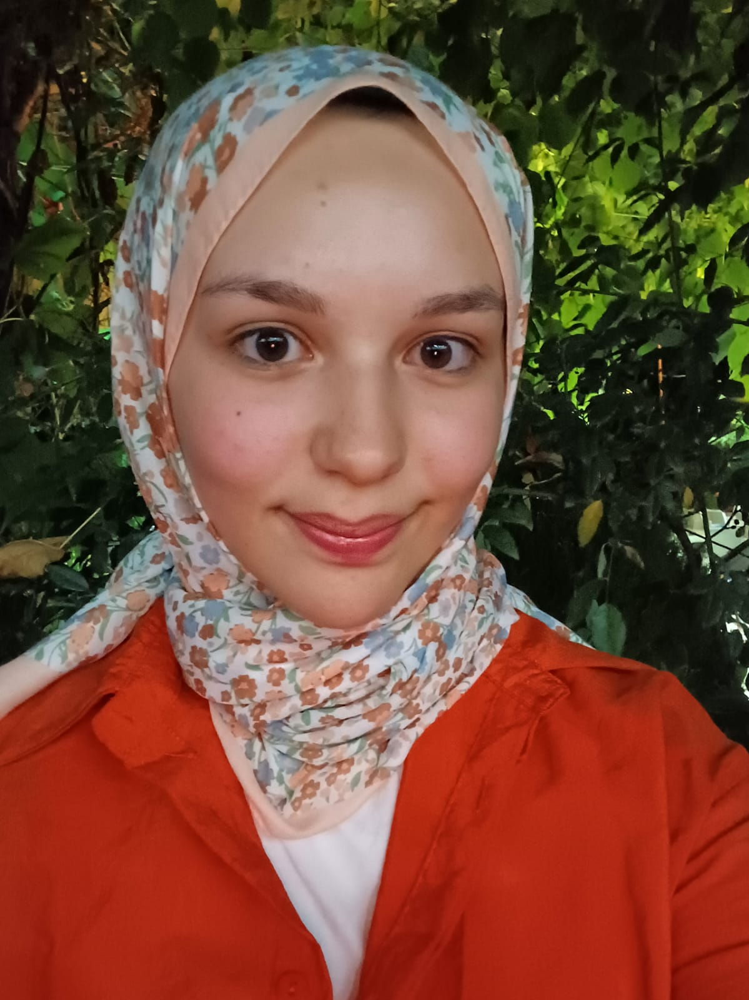

Saniye Topal
Hobilerim & İlgi Alanlarım
Merhaba ben Saniye 17 yaşındayım. Sakarya Üniversitesinde bilgisayar mühendisliği okuyorum . Kalan vaktimde de hobilerimle , sevdiklerimle ilgeleniyorum.
Hem kendi bölümle ilgili hem de başka alanlarda hobilere sahibim.
Yüzmek, kitap okumak, müzik dinlemek ve seyahat etmek en sevdiğim aktiviteler arasında.
Lisans bölümümü kazzandıktan sonra kod yazmaktan da zevk aldığımı fark ettim.
Eskiden amatör bir şekilde yağlı boya , ebru gibi resim sanatının dallarına merak salsam da zamanla maleseef bıraktım
Dönem dönem yaptığım ve sevdiğim şeyler değişse de her sanatı ve sporu denemek isterim.